Commit 6ca1f1e22bcd5a0d9870bb27a29349c7c60ddb8e. Command node tools/scene-truth/cli.mjs
| confidence | kind | scenario | tick | zoom | tier | objects | summary |
|---|---|---|---|---|---|---|---|
| review | surface-identity-omitted | fixture.production-canary | 2 | 144 | low | checkpoint-surface | The lab checkpoint keeps defId only. These entities have no package id on that surface, so a missing model is not claimed. ADAPTER.md names the live hook that would copy it. |
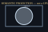
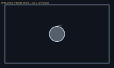
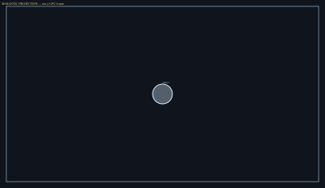
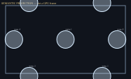
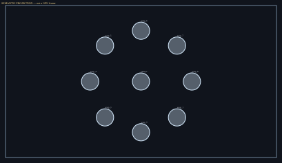
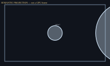
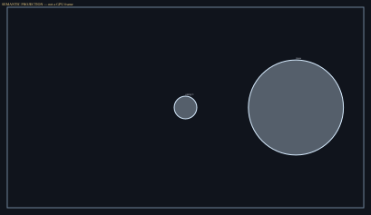
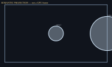
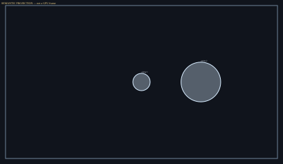
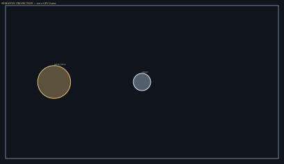
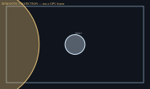
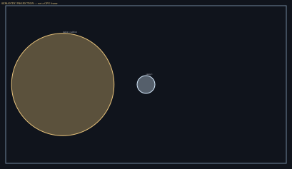
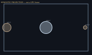
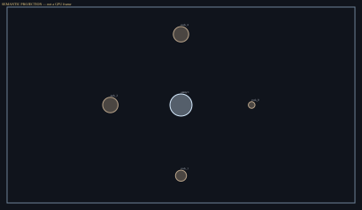
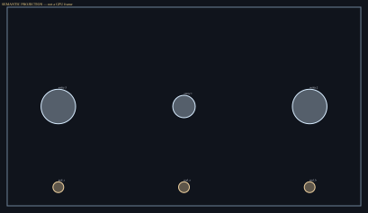
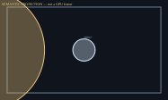
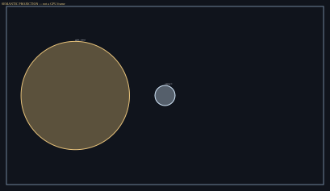
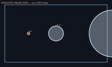
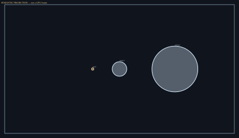
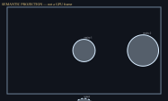
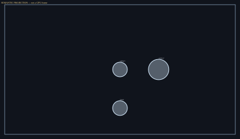
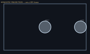
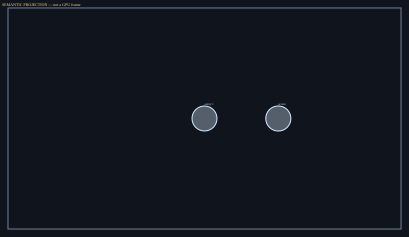
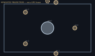
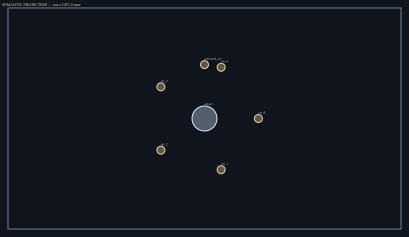
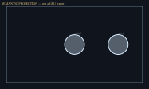
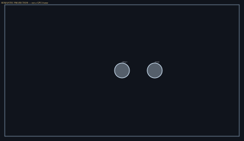
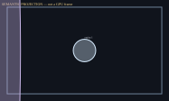
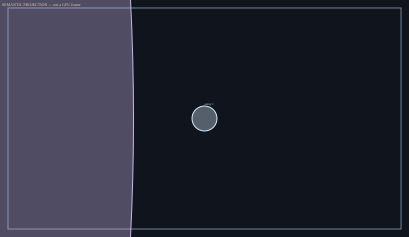
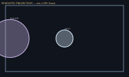
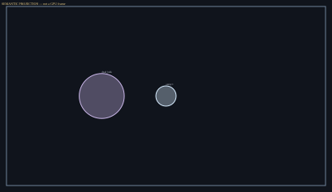
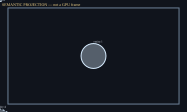
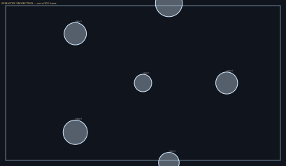
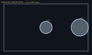
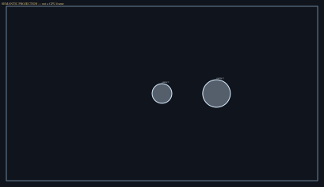
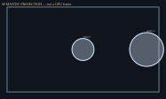
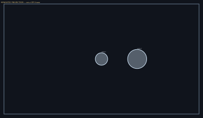
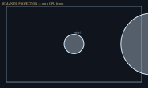
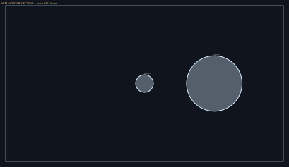
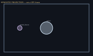
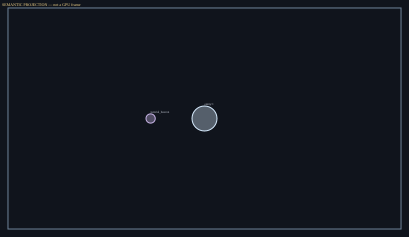
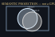
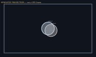
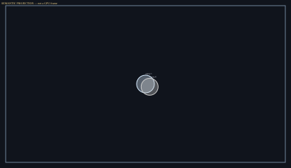
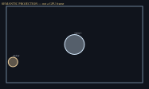
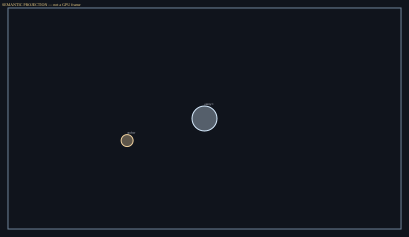